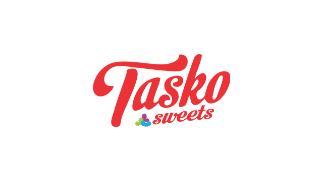

About Us
At TaskoSweets, we believe every bite should bring happiness. Our sweets are handmade with love and inspired by traditional recipes.
Tasko Sweets was established in July 2017. Our dream was to bring a smile to your face as you entered the store. Our aim is to offer you, our customers a selection of all your favourite local and imported sweets and chocolates, nostalgic candy and bring back sweet memories and moments from your childhood.
We have something for everyone in our Tasko Stores, located in Gauteng and the Northwest or online for your convenience. With a wide range of treats that have the power to say, Thank you, I love you, and even express what is impossible to say. We know that candy makes for building the fondest of memories.
When you buy a box of chocolates or a jar of candy, you are spreading love and joy.
We carry a wide range of imported ranges of chocolates from: America, Australia, Belgium, England, Brazil, Argentina & Switzerland, with brands such as Reese’s Peanut Butter Cups, Lindt, Fry’s, Butlers, Guylian, Hershey’s Kisses to mention a few.
We also have an extensive range of candies imported from across the globe, not forgetting the local favourites.
For those looking for a tea time treat, we carry a wide range of cookies to sweeten any bad day, with brands like Marlin (from Brazil), Chips Ahoy (from the USA) and a wide range of Oreo’s to please every member of the family. Come on and explore our world of sweet delights!